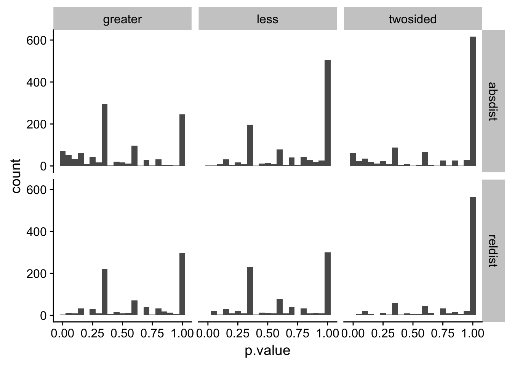
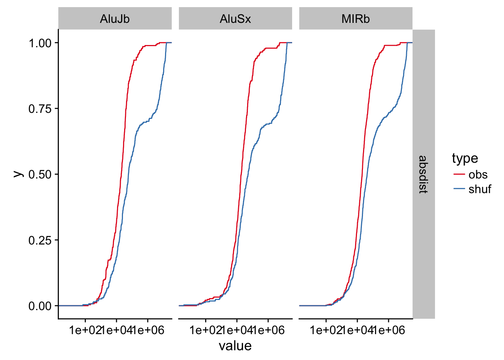

valr can be used to explore relationships between sets of intervals. Here we explore the relationship between transcription start sites and repetitive elements in the human genome.
library(valr)
library(dplyr)
library(ggplot2)
library(tidyr)
# load repeats and genes. Data in the valr package is restricted to chr22; the entire
# files can be downloaded from UCSC.
rpts <- read_bed(valr_example('hg19.rmsk.chr22.bed.gz'), n_fields = 6)
genes <- read_bed(valr_example('hg19.refGene.chr22.bed.gz'), n_fields = 12)
# load chrom sizes
genome <- read_genome(valr_example('hg19.chrom.sizes.gz'))
# create 1bp intervals representing transcription start sites
tss <-
mutate(genes,
.start = ifelse(strand == '+', start, end),
.end = .start + 1) %>%
select(chrom, start = .start, end = .end, name)
tss
#> # A tibble: 1,267 x 4
#> chrom start end name
#> <chr> <int> <dbl> <chr>
#> 1 chr22 16193009 16193010 NR_122113
#> 2 chr22 16157078 16157079 NR_133911
#> 3 chr22 16162065 16162066 NR_073459
#> 4 chr22 16162065 16162066 NR_073460
#> 5 chr22 16231289 16231290 NR_132385
#> 6 chr22 16287937 16287938 NM_001136213
#> 7 chr22 16274608 16274609 NR_046571
#> 8 chr22 16449804 16449805 NM_001005239
#> 9 chr22 17073700 17073701 NM_014406
#> 10 chr22 17082800 17082801 NR_001591
#> # ... with 1,257 more rowsFirst we define a function that takes x and y intervals and computes distance statistics (using bed_reldist() and bed_absdist()) for specified groups. The value of each statistic is assigned to a .value column.
distance_stats <- function(x, y, genome, grp, type = NA) {
group_by_(x, .dots = grp) %>%
do(
reldist = bed_reldist(., y, detail = TRUE) %>%
select(.value = .reldist),
absdist = bed_absdist(., y, genome) %>%
select(.value = .absdist)
) %>%
tidyr::gather_('stat', 'value', setdiff(names(.), list(grp))) %>%
mutate(type = type)
} We use the distance_stats() function to apply the bed_absdist() function to each group of data.
obs_stats <- distance_stats(rpts, tss, genome, 'name', 'obs')
obs_stats
#> # A tibble: 2,106 x 4
#> name stat value type
#> <chr> <chr> <list> <chr>
#> 1 (A)n reldist <tibble [27 x 1]> obs
#> 2 (AAAAACA)n reldist <tibble [1 x 1]> obs
#> 3 (AAAAC)n reldist <tibble [6 x 1]> obs
#> 4 (AAAAG)n reldist <tibble [2 x 1]> obs
#> 5 (AAAAT)n reldist <tibble [3 x 1]> obs
#> 6 (AAAATA)n reldist <tibble [1 x 1]> obs
#> 7 (AAAATAA)n reldist <tibble [1 x 1]> obs
#> 8 (AAAC)n reldist <tibble [2 x 1]> obs
#> 9 (AAACA)n reldist <tibble [1 x 1]> obs
#> 10 (AAACAA)n reldist <tibble [1 x 1]> obs
#> # ... with 2,096 more rowsAnd the same is done for a set of shuffled group of data. bed_shuffle() is used to shuffle coordinates of the repeats within each chromosome (i.e., the coordinates change, but the chromosome stays the same.)
shfs <- bed_shuffle(rpts, genome, within = TRUE)
shf_stats <- distance_stats(shfs, tss, genome, 'name', 'shuf')Now we can bind the observed and shuffled data together, and do some tidying to put the data into a format appropriate for a statistical test. This involves:
unnest()ing the data framesname), stat (reldist or absdist) and type (obs or shf)tidyr::spread() to create two new obs and shuf columnsNA values.res <- bind_rows(obs_stats, shf_stats) %>%
tidyr::unnest(value) %>%
group_by(name, stat, type) %>%
mutate(.id = row_number()) %>%
tidyr::spread(type, .value) %>%
na.omit()
res
#> # A tibble: 16,681 x 5
#> # Groups: name, stat [1,906]
#> name stat .id obs shuf
#> <chr> <chr> <int> <dbl> <dbl>
#> 1 (A)n absdist 1 5120782 15543320
#> 2 (A)n absdist 2 226476 11260783
#> 3 (A)n absdist 3 31241 7823902
#> 4 (A)n absdist 4 8931 6280428
#> 5 (A)n absdist 5 41316 5741843
#> 6 (A)n absdist 6 22519 2568034
#> 7 (A)n absdist 7 15173 2434224
#> 8 (A)n absdist 8 21985 2346246
#> 9 (A)n absdist 9 13457 1765667
#> 10 (A)n absdist 10 134007 25500
#> # ... with 16,671 more rowsNow that the data are formatted, we can use ks.test() to determine whether there are significant differences between the observed and shuffled data for each group. broom::tidy() is used to reformat the results of each test into a data_frame, and the results of each test are gathered to into a type column for each test type.
library(broom)
pvals <- res %>% do(twosided = tidy(ks.test(.$obs, .$shuf)),
less = tidy(ks.test(.$obs, .$shuf, alternative = 'less')),
greater = tidy(ks.test(.$obs, .$shuf, alternative = 'greater'))) %>%
tidyr::gather(alt, type, -name, -stat) %>%
unnest(type) %>%
select(name:p.value) %>%
arrange(p.value)Histgrams of the different stats help visulaize the distribution of p.values.
ggplot(pvals, aes(p.value)) +
geom_histogram(binwidth = 0.05) +
facet_grid(stat ~ alt) + theme_bw()
We can also assess false discovery rates (q.values) using p.adjust().
pvals <-
group_by(pvals, stat, alt) %>%
mutate(q.value = p.adjust(p.value)) %>%
ungroup() %>%
arrange(q.value)Finally we can visualize these results using stat_ecdf().
res_gather <- tidyr::gather(res, type, value, -name, -stat, -.id)
signif <- head(pvals, 5)
res_signif <-
signif %>%
left_join(res_gather, by = c('name', 'stat'))
ggplot(res_signif, aes(x = value, color = type)) +
stat_ecdf() +
facet_grid(stat ~ name) + theme_classic() + scale_x_log10()
bed_projection() is a statistical approach to assess the relationship between two intervals based on the binomial distribution. Here, we examine the distribution of repetitive elements within the promoters of coding or non-coding genes.
First we’ll extract 5 kb regions upstream of the transcription start sites to represent the promoter regions for coding and non-coding genes.
# create intervals 5kb upstream of tss representing promoters
promoters <-
bed_flank(genes, genome, left = 5000, strand = TRUE) %>%
mutate(name = ifelse(grepl('NR_', name), 'non-coding', 'coding')) %>%
select(chrom:strand)
# select coding and non-coding promoters
promoters_coding <- filter(promoters, name == 'coding')
promoters_ncoding <- filter(promoters, name == 'non-coding')
promoters_coding
#> # A tibble: 973 x 6
#> chrom start end name score strand
#> <chr> <int> <int> <chr> <chr> <chr>
#> 1 chr22 16287937 16292937 coding 0 -
#> 2 chr22 16449804 16454804 coding 0 -
#> 3 chr22 17073700 17078700 coding 0 -
#> 4 chr22 17302589 17307589 coding 0 -
#> 5 chr22 17302589 17307589 coding 0 -
#> 6 chr22 17489112 17494112 coding 0 -
#> 7 chr22 17560848 17565848 coding 0 +
#> 8 chr22 17560848 17565848 coding 0 +
#> 9 chr22 17602213 17607213 coding 0 -
#> 10 chr22 17602257 17607257 coding 0 -
#> # ... with 963 more rows
promoters_ncoding
#> # A tibble: 294 x 6
#> chrom start end name score strand
#> <chr> <int> <int> <chr> <chr> <chr>
#> 1 chr22 16152078 16157078 non-coding 0 +
#> 2 chr22 16157065 16162065 non-coding 0 +
#> 3 chr22 16157065 16162065 non-coding 0 +
#> 4 chr22 16193009 16198009 non-coding 0 -
#> 5 chr22 16231289 16236289 non-coding 0 -
#> 6 chr22 16269608 16274608 non-coding 0 +
#> 7 chr22 17077800 17082800 non-coding 0 +
#> 8 chr22 17156430 17161430 non-coding 0 -
#> 9 chr22 17229328 17234328 non-coding 0 -
#> 10 chr22 17303363 17308363 non-coding 0 +
#> # ... with 284 more rowsNext we’ll apply the bed_projection() test for each repeat class for both coding and non-coding regions.
# function to apply bed_projection to groups
projection_stats <- function(x, y, genome, grp, type = NA) {
group_by_(x, .dots = grp) %>%
do(n_repeats = nrow(.),
projection = bed_projection(., y, genome)) %>%
mutate(type = type)
}
pvals_coding <- projection_stats(rpts, promoters_coding, genome, 'name', 'coding')
pvals_ncoding <- projection_stats(rpts, promoters_ncoding, genome, 'name', 'non_coding')
pvals <-
bind_rows(pvals_ncoding, pvals_coding) %>%
ungroup() %>%
tidyr::unnest() %>%
select(-chrom)
# filter for repeat classes with at least 10 intervals
pvals <- filter(pvals, n_repeats > 10,
obs_exp_ratio != 0)
# adjust pvalues
pvals <- mutate(pvals, q.value = p.adjust(p.value))
pvals
#> # A tibble: 179 x 7
#> name type n_repeats p.value obs_exp_ratio lower_tail
#> <chr> <chr> <int> <dbl> <dbl> <chr>
#> 1 (A)n non_coding 28 0.003529188 4.7150373 FALSE
#> 2 (AT)n non_coding 48 0.297946444 0.9168128 FALSE
#> 3 (CA)n non_coding 31 0.156135635 1.4195811 FALSE
#> 4 (GT)n non_coding 42 0.247258594 1.0477861 FALSE
#> 5 (T)n non_coding 61 0.404908066 0.7214265 FALSE
#> 6 (TG)n non_coding 40 0.062233679 2.2003507 FALSE
#> 7 A-rich non_coding 54 0.348067174 0.8149447 FALSE
#> 8 Alu non_coding 15 0.044563006 2.9338010 FALSE
#> 9 AluJb non_coding 271 0.022488504 1.7862626 FALSE
#> 10 AluJo non_coding 208 0.021566061 1.9041497 FALSE
#> # ... with 169 more rows, and 1 more variables: q.value <dbl>The projection test is a two-tailed statistical test. A significant p-value indicates either enrichment or depletion of query intervals compared to the reference interval sets. A value of lower_tail = TRUE column indicates that the query intervals are depleted, whereas lower_tail = FALSE indicates that the query intervals are enriched.
library(knitr)
# find and show top 5 most significant repeats
signif_tests <-
pvals %>%
arrange(q.value) %>%
group_by(type) %>%
top_n(-5, q.value) %>%
arrange(type)
knitr::kable(signif_tests)| name | type | n_repeats | p.value | obs_exp_ratio | lower_tail | q.value |
|---|---|---|---|---|---|---|
| AluSx1 | coding | 364 | 0.0000114 | 2.106148 | FALSE | 0.0020357 |
| AluSx3 | coding | 95 | 0.0001422 | 2.914120 | FALSE | 0.0251780 |
| AluJb | coding | 271 | 0.0002220 | 2.043110 | FALSE | 0.0384039 |
| Charlie4z | coding | 11 | 0.0012290 | 5.807861 | FALSE | 0.2052397 |
| AluSz | coding | 259 | 0.0013182 | 1.891105 | FALSE | 0.2188250 |
| MER3 | non_coding | 27 | 0.0000270 | 8.149447 | FALSE | 0.0048081 |
| L1MC4a | non_coding | 23 | 0.0001448 | 7.653394 | FALSE | 0.0254769 |
| L1ME1 | non_coding | 38 | 0.0002034 | 5.790397 | FALSE | 0.0355962 |
| G-rich | non_coding | 54 | 0.0002172 | 4.889668 | FALSE | 0.0377926 |
| L1MC5 | non_coding | 29 | 0.0004561 | 6.069933 | FALSE | 0.0784540 |